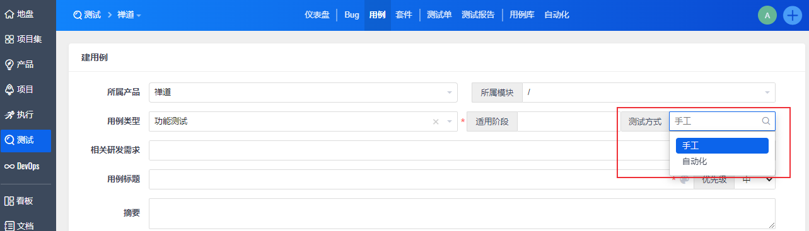
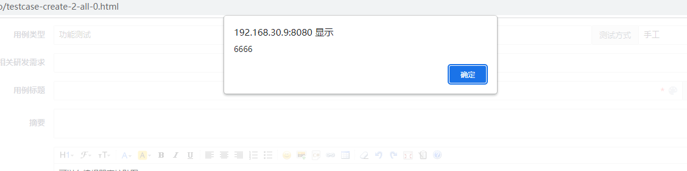
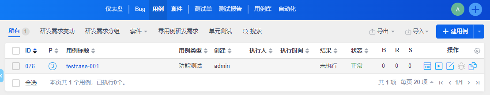
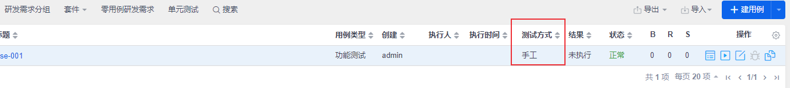
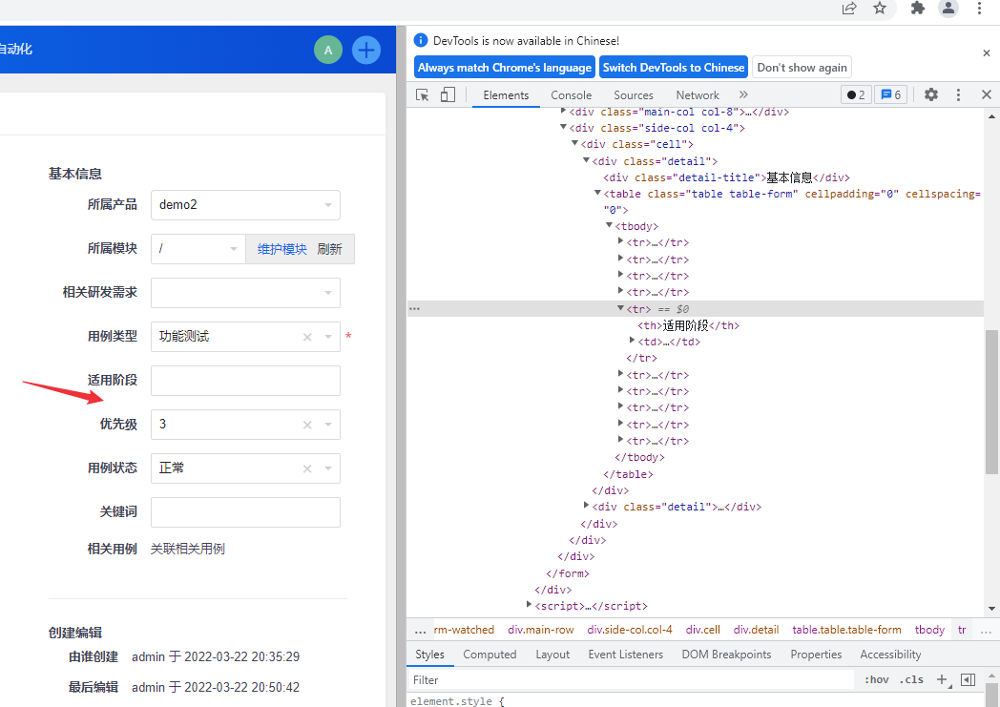
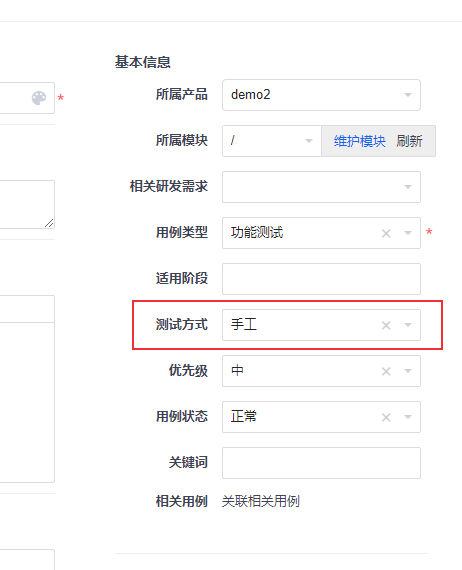

对禅道框架有初步的了解后就可以开始进行二次开发了，不需要完全搞懂zentaoPHP框架，可以在开发过程中学习。本文记录一下我进行禅道二次开发的其中一个小功能的实现过程。
注：本文基于禅道开源版16.4进行二次开发，禅道16.5+版本升级了扩展机制，具体请参考官方文档：https://devel.easycorp.cn/book/extension-new/intro-52.html 。
对禅道进行扩展主要在module目录下进行，在需要扩展的模块下对model、control、view方法以及css、js、lang等进行扩展。下面介绍如何在用例模块中新增一个字段，了解禅道是如何进行扩展的。
需求是对测试用例新增字段【测试方式】，选项为手工或者自动化，新建用例页面的效果如下：

下面介绍具体扩展步骤。
新建用例页面扩展
对禅道的二次开发一般在对应模块下的 ext 目录中进行扩展，不需要对禅道源码进行修改。先来介绍新建用例页面新增【测试方式】字段的步骤。
1. 定位扩展模块
第一步需要定位到要扩展页面的模块名和方法名。
点击进入新建用例页面，可以看到URL地址为：http://192.168.30.9:8080/zentao/testcase-create-1-all-0.html 。
通过URL地址可以得到如下信息：
- 模块名为testcase
- 方法名为create，可以在
\module\testcase\control.php中找到create方法。 \module\testcase\model.php文件中存放control可以调用的Model方法。- 对应的view模板文件为
\module\testcase\view\create.html.php。 - 后面的
1-all-0是create方法的参数，这里的1表示产品ID，具体含义需要查看代码。
通过这个URL我们知道要扩展testcase模块下的create方法。
2. view 扩展
对 view 方法的扩展有两种方式：覆盖扩展和钩子扩展。
覆盖扩展
覆盖扩展就是对原来的方法进行重写，直接在 \module\testcase\ext\view 目录下创建与要扩展方法同名的文件 create.html.php，复制 \module\testcase\view 目录下 create.html.php 代码，新增【测试方式】相关前端代码。下面直接给出代码（部分关键代码）：
1 | <td> |
由于我要将它放在【适用阶段】字段后面，因此对【适用阶段】相关代码也进行了修改。
我们知道，view模板是由于向用户展现数据的，相关数据是通过control方法获取的。通过参考其它字段，【测试方式】字段需要 $lang->testcase->execType 、$lang->testcase->execTypeList 和 $execType 这三个数据。前两个变量需要扩展lang文件，最后一个变量需要扩展control层中的create方法。
view模板的钩子扩展方法稍后介绍。
3. lang扩展
在 ext/lang 目录下创建zh-cn文件夹（其它语言类似），然后在zh-cn目录下创建zh-cn.php文件（任意文件名）：
1 |
|
4. control方法扩展
接下来扩展 testcase 的control方法里面的 create 方法，在\module\testcase\ext 目录下创建一个control目录，然后在control 目录下创建create.php文件（注意：创建的文件名要小写。），参数和control.php中的create方法一样：
1 |
|
新增的两行代码会自动扩展到control.php中的create方法中。也可以复制源码，在源码中修改，如果全部复制过来就不要用parent方法了。
由于新增了一个字段，需要对case表新增一个字段execType：
1 | ALTER TABLE `zentao`.`zt_case` |
目前不需要对model方法进行扩展，到这里已经完成了对新建用例页面的扩展。
这里介绍一下model方法扩展方式。
5. model方法扩展
在 \testcase\ext 目录下创建model目录。然后在\testcase\ext\model 目录下进行model方法扩展，主要有3种扩展方式：
- 覆盖扩展：创建*.php文件
- 钩子扩展：创建hook目录，在hook目录下创建
扩展方法名.扩展名.php文件 - class目录：加密使用的方式
覆盖扩展
model方法扩展直接写要扩展的方法名即可，不用像control方法扩展那样新声明类，在\testcase\ext\model 目录下创建test.php:
1 |
|
钩子扩展
在\testcase\ext\model\hook 目录下创建 扩展方法名.扩展名.php ，框架会把扩展方法的所有钩子代码合并到最终的代码中。
在 \testcase\ext\model\hook\目录下创建create.test.php文件
1 |
|
查看效果：创建用例，点击保存

用例浏览页面扩展
在创建用例页面新增了【测试方式】字段之后，如果想在用例浏览页面查看每条用例的测试方式，需要对browse页面进行扩展。

具体步骤不介绍了，思路和新建用例页面扩展一样。效果如下图：

用例编辑页面扩展
用例编辑页面也要添加【测试方式】字段，这里介绍一下view方法的钩子扩展方式。
view方法钩子扩展
将【测试方式】字段放到【适用阶段】后面：

文件命名方式：方法名.扩展名.html.hook.php，钩子的内容会追加到主干对应view文件末尾。在\module\testcase\ext\view 目录下创建 create.test.html.hook.php 文件：
1 |
|
效果：

js/css/lang/config 扩展
有时候需要对js、css、lang和config文件进行扩展，前面介绍了对lang的扩展。js 和 css 扩展方法和lang一样。
在
ext/js目录下创建和方法名同名的目录create，进入create目录，创建test.js文件在
ext/css目录下创建和方法名同名的目录create，进入create目录，创建test.css文件
config扩展是在ext/config 目录下创建php文件即可。
关于禅道二次开发相关笔记就写到这里了，文章仅介绍了禅道扩展的一个简单示例，更多用法可以阅读源码，欢迎交流讨论。
参考资料：
弱小和无知不是生存的障碍，傲慢才是。——刘慈欣《三体3：死神永生》
本文标题:禅道二次开发（三）：二次开发实例
文章作者:hiyo
文章链接:https://hiyongz.github.io/posts/zentao-extension-example/
许可协议:本博客文章除特别声明外，均采用CC BY-NC-ND 4.0 许可协议。转载请保留原文链接及作者。